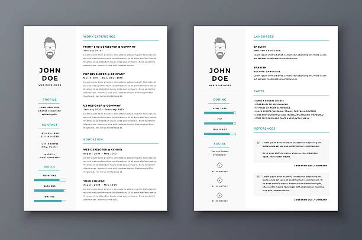

You might have had a solid exercise regimen back in college.
You might have saved money aggressively when you were still single.
You might have tracked your earning and spending more carefully
when you were a young freelancer lacking consistent cash flow.
Time passes. Your business morphs. You form new habits—good and bad.
It’s not that you don’t know what to do. Knowing isn't the same as
doing. Knowledge can inform better habits, but the habits are what
bring positive, lasting change. Revisiting the basics offers an
opportunity to revisit the habits we have formed, intentionally
and unintentionally.
What is cash flow projection?
Cash flow is the movement of money into, through, and out of your business.
Basic economics are at play. Regardless of the incentives for running
your business, you need cash to operate, because it takes money to
make money. Without profit, you cannot grow. And you can’t have
profit without healthy cash flow. The flow of cash is about the
timing of your income and expenses. Everything needs to work in
rhythm, otherwise, you run out of cash and you don’t have a business.
If your costs exceed your profits, then you will be operating in the
negative. But if you can make more than
you spend, all sorts of growth opportunities open up.
Cash flow is the movement of money into, through, and out of your business.
Nine times out of ten, you can trace the failure of a business back to
negative cash flow. And as often, you will notice that the owners of
successful, profitable businesses proactively manage their cash flow.
But they also watch their cash flow projections. They plan for growth because
rapid growth can be just as much of a threat as losing a major contract or a
thousand customers. Both drought and a flood expose weak infrastructure.
Projecting cash flow is important because you need to anticipate when income
and expenses will hit so you can plan for growth, manage
lulls and decide when to take cash out of the business or reinvest profits.
So what steps are the steps for accurate cash flow projection?
You’re already aware of your company’s various expenses: compensation,
office space, marketing and advertising, equipment, technology, and so
forth. Pulse helps you to quickly and effectively place these
numbers alongside all of your accounts
receivable. The more accurate your predictions, the better your planning.
What are your spending patterns? What are the trends in your earning?
Has your business historically had a wet and dry season? If so, you’ll
know to set aside an immediate surplus to cover a future shortfall.
Soon enough, you may realize that you must ramp up your marketing
and sales efforts and set bigger goals, or you won’t be able to grow your team,
work fewer hours, and spend more time with your family.
Cash flow isn't just about how much money comes in and how much goes out.
It's about when it comes and goes.
Pulse helps you see how each project’s variables affect profitability.
Cash flow isn't just about how much money comes in and how much
goes out. It's about when it comes and goes.
You can(’t) afford it.
Pulse gives you the information you need to make better business decisions.
For example, maybe your devs make snarky comments about the swill you
serve at the office. Is it time to bite the bullet and start buying better
coffee? Yes. You can afford it, and this rather small
expense would represent an inordinately large morale boost.
Can you afford to give bonuses this December? Pulse tells you maybe.
Work hard, then reevaluate in six weeks. In the meantime, you can start paying for gym
memberships. The healthier your team, the healthier your bottom line.
Follow us on Follow us on Twitter.
Related Posts

CASH FLOW BASICS
What is Cash Flow
Projection?
Profitable businesses fail every year because they run out cash. But you don't have to use spreadsheets
Read More

CASH FLOW BASICS
Cash Flow: The Lifeblood
of Your Business
One of the most common questions from our customers and prospects is whether
Pulse can be used to tract actual income and expenses alongside projected income and expenses. The answer is yes!
Read More

CASH FLOW BASICS
Four Tips for Managing
Your Startup's Burn Rate
Planning for the future is necessary to grow your business. It will also give you peace of mind.
Here are some tips for predicting future cash flow so that you can make decisions with confidence.
Read More